minecraft
minecraft my beloved. honestly what can i say except that this is a classic. begged my mom for this game on my birthday when i was 13 years old for my laptop that could hardly run it. so worth it. thanks mom
i've always played this game on and off (when the fixation hits every 5 months or so) but it has always had a special place in my heart tbh
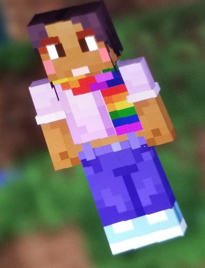this is my in game character in bedrock  i love them and their gay lil scarf a ton
i love them and their gay lil scarf a ton
i mostly play survival on java! though i also own it on switch (do not buy minecraft on the switch worst mistake of my life)
this gaming log will be formatted differently than my other logs! i will have sections for the different worlds that i have played in :]
my main single survival world!!! i made this world when i finally got to download minecraft on my new laptop (for the longest time the launcher would crash on me) in january of 2023!
i didnt spawn in a very interesting place tbh so i ventured into the seas til i found a mushroom forest (YAY!!) and in that mushroom forest theres was like a tiny beach biome and the rest was a tall (or old, i dont remember the biome name help) birch forest. i remember there was a beehive in one of the trees and i fell so in love with them 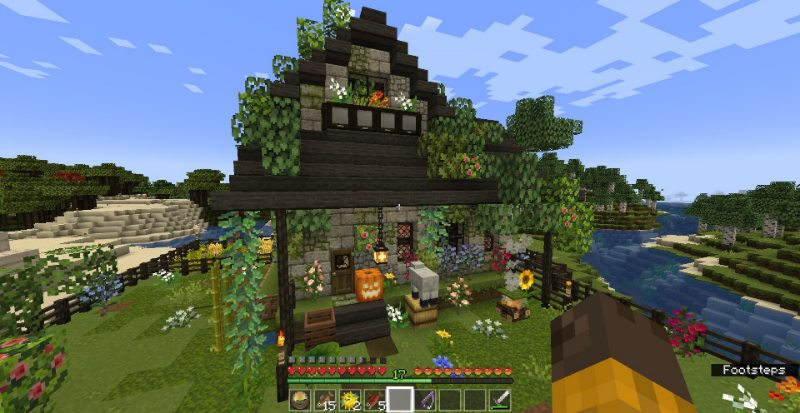
it was also the first world in which i tamed a cat which i was so so happy about. everynyan, say hello to nincompoop
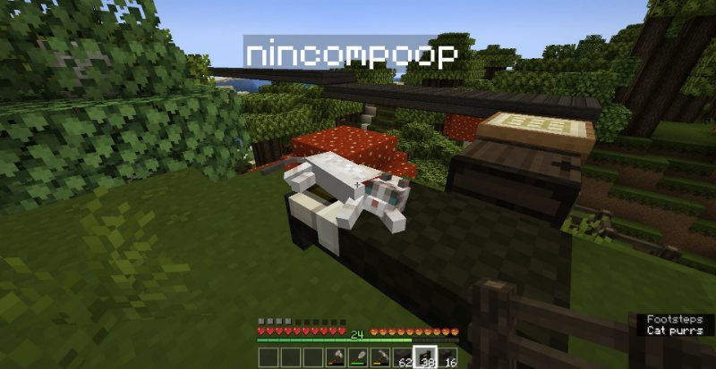
since i hadnt played in a long time, i also got to see the lush caves!!! and just wow, what a beautiful experience was to discover this huge cave
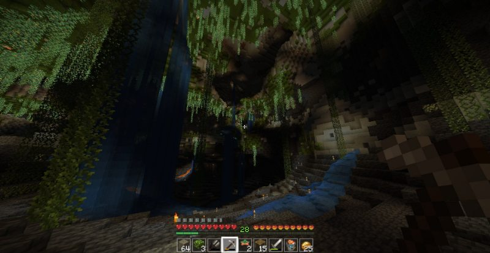
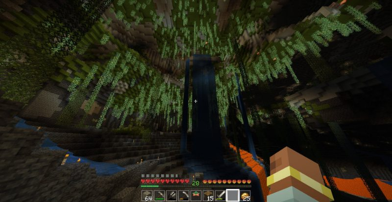
i've spent a lot of time in this world!! and since my goal with minecraft is always to just have a chill time i havent really made a lot of "progress". last time i played i got to go to the nether and found a fortress though i havent visited much (cus im a bit scared.....) but i'm gonna try get into this world again bc i miss it a bit and my lovely cats in it. this is my family
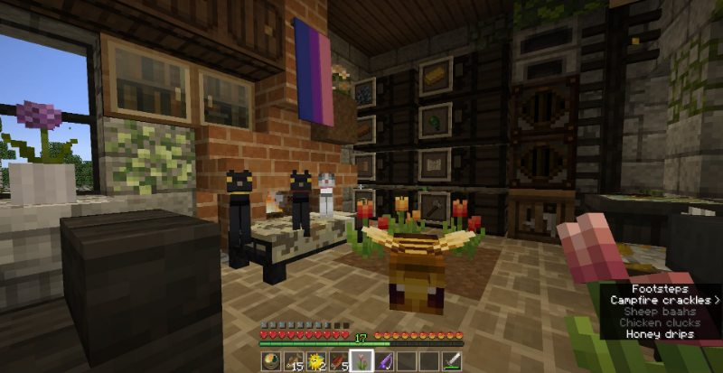
i also have a room for the axolotls i found in the lush cave YAY!
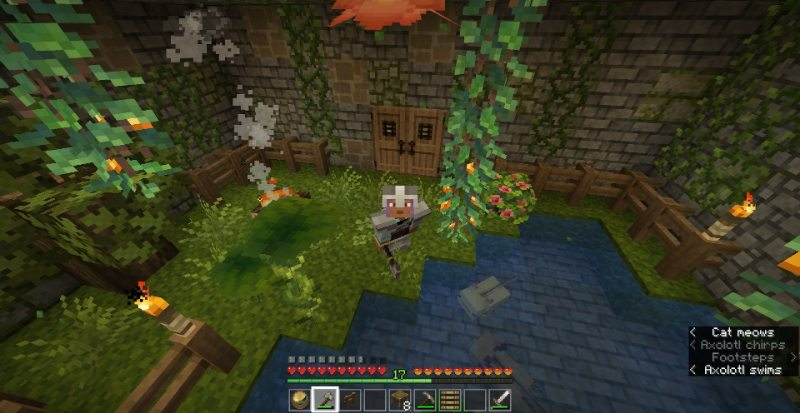
and here's me getting startled by endermen, they are my besties but they give the WORST jumpscares
(13.aug.23)
a world where me and my boyfriend currently play in!
just started playing in this world so i dont have much to say about but i absolutely LOVE the seed that we got i mean this is just perfect. we spawned in a place FULL of flowers. like every corner had flowers
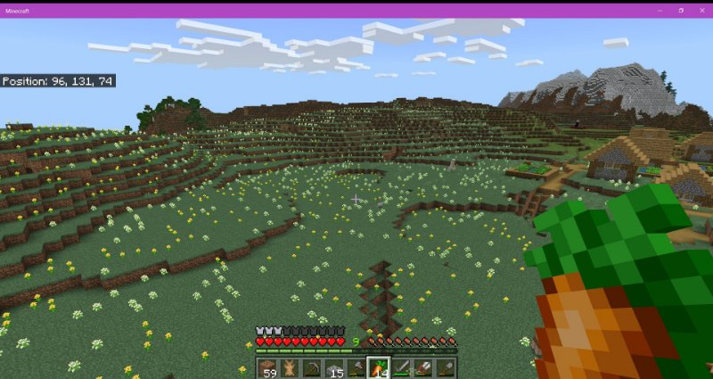
and we were also super close to a cherry grove biome! my first time seeing them in game. they are so cute.
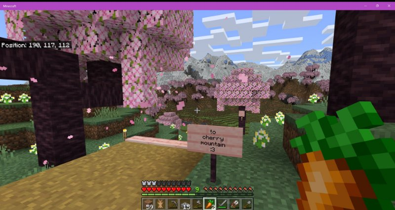
im currently working on making a path from the village to the top of that mountain. and i plan to make my house on top of said mountain. im super excited tbh i love this seed.
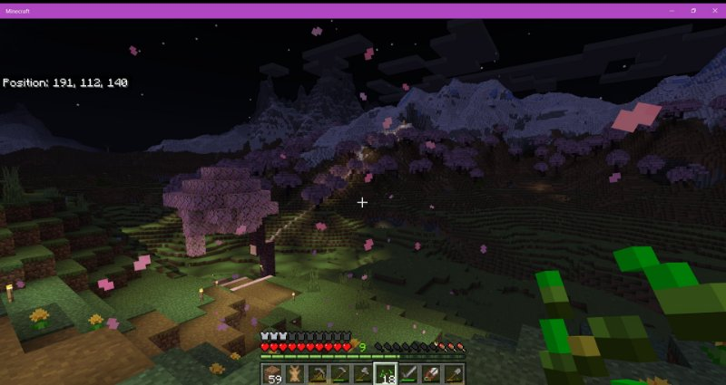
meanwhile my bf is yearning for the mines. i followed him once to one of his mining adventures and we ended up in the fucking deep dark. safe to say we did NOT make it out of there alive LOL
(13.aug.23)
during my january 2023 minecraft fixation i was mostly (80% of the time) watching minecraft videos from this youtuber called eyecraftmc. i really like his videos tbh. he mostly makes guides / tutorials for minecraft and he has a very monotone voice which makes it perfect for me to fall asleep to it.
ANYWAY i saw that he had a minecraft server and i decided to join bc SURE why not! i've never been in an actual minecraft server and tbh!! my time in the server has been super cool and i've met some nice people in there as well. im barely visit it but i have my own little house (which i will share a screenshot here at some point). very fun and chill. i was mostly playing on this server instead of poopie land (my main single world) during this time. it was that serious.
this screenshot from when i was building something with my in-game neighbors!! (what a cute concept. in game neighbors) we decided to take a selfie together. im the one in the middle :]
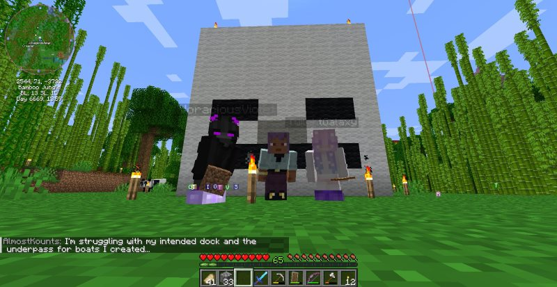
(13.aug.23)
poopie land

des + hum (my bf
 ) world
) world
eyecraft server